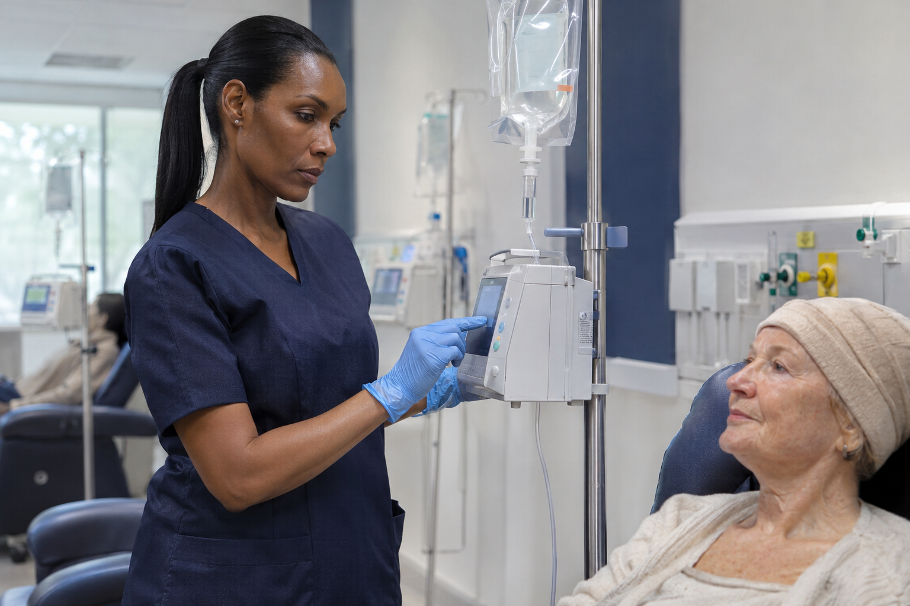

Nursing, Navigation and Innovative Therapies in Oncology

420 hours over 12 months: 360 hours of course units and 60 hours of an applied final project. The briefing includes 78 hours of simulation and 60 hours of supervised observation. Students do not perform procedures or assume direct patient care during observation.
Duration and classes
Planned dates: March 6, 2027 to February 6, 2028. Hybrid format: monthly Saturday and Sunday meetings at Rudge Ramos Campus, from 8 am to noon and 1 pm to 5 pm; fortnightly live online classes on Saturdays from 8 am to 10 am; asynchronous study; and 60 hours of observation in services on weekdays from October 2027 to January 2028. Dates require university confirmation.
Frequently asked questions
Completed Nursing degree, at least two years of experience as a nurse, and active Coren registration. Experience in oncology is not mandatory for admission, according to the briefing.
Minimum grade: 7.0 in each course unit and in the final project; 75% attendance in on-campus and live online activities; 100% attendance in supervised observation, with make-up requirements for justified absences.
Curriculum
Evidence-based practice; patient safety; clinical communication and bioethics; digital health and responsible AI; healthcare management. Specialized topics: oncology care pathways, patient navigation, safe antineoplastic therapy, immunotherapy and cellular therapies, symptom management and early palliative care, patient education and supervised navigation practice.
Duration and classes
Planned dates: March 6, 2027 to February 6, 2028. Hybrid format: monthly Saturday and Sunday meetings at Rudge Ramos Campus, from 8 am to noon and 1 pm to 5 pm; fortnightly live online classes on Saturdays from 8 am to 10 am; asynchronous study; and 60 hours of observation in services on weekdays from October 2027 to January 2028. Dates require university confirmation.
Course leadership and faculty →
Frequently asked questions
Where can I find course details?
Course cards lead to curriculum, class format, tuition and faculty information.
Are applications open?
Applications, the final admissions notice, cohort size and official schedule await confirmation.
Is the scholarship campaign already available?
The 20% scholarship is an illustrative proposal and is not an active offer.